迅雷之前一直使用的 TSLOG 在 Win10 系统下会导致迅雷出现频繁的卡死现象。TSLOG 代码量太多，不太好维护。后来，贵灯推出了更加好用、性能更高等一系列优点的基于 ETW(Event Tracing for Windows) 的日志库，准备替换掉原来的 TSLOG。该日志库能根据模块、日志等级拆分日志，并且支持动态开启、多线程安全等特性，对开发/测试更加友好。
同时，贵灯还提供了一个用于查看该 ETW 日志库日志的查看器。大家现目前正在部分 C++ 项目中使用（Lua 还没有使用）。
我今天要分享的是基于贵灯的 ETW 日志查看器一个增强改进版本。
ETW 大概可以分成三个部分：日志生产者（Provider，日志使用者）、日志控制者（Controller，日志查看器）、日志消费者（Consumer，日志查看器）。
使用者在启动时向系统注册成为一个生产者，该生产者具有唯一 GUID 标识。注册时同时向系统提供一个回调函数，当日志控制者尝试开启某 GUID 模块的时候，系统会调用该回调函数。
注册成为产生者后，用户在其代码中通过生产者提供的一系列宏来生产日志。生产者通过系统调用把日志缓存到系统日志缓存，供消费者使用。
日志控制者通过指定某一生产者的 GUID 来控制是否开启该生产者的日志输出功能。开启与关闭某生产者时，系统会回调上述日志生产者所提供的回调函数达到动态开启的能力。（跨进程操作，系统提供支持）。
消费者向系统注册成为日志控制者对应 GUID 的日志缓存处理者，当某模块被日志控制者开启后，该模块的日志就将发送到该日志控制者所对应的日志缓存中，被该日志消费者读取。
该日志库仅有一个头文件 etwlogger.h。使用者只需要在任何需要日志的源代码文件中包含此一个头文件即可（或包含中公共头文件中）。没有其它依赖。
该日志库是线程安全的。仅定义一个全局的日志对象即可，该日志对象有一个唯一的 GUID。
// 日志库唯一需要包括的头文件
// 可放在公共头文件中
#include "etwlogger.h"
#ifdef ETW_LOGGER
// 使用 VS 工具中的 GUID 工具为该生产者
// 创建一个全局唯一的 GUID 值用于标识该生产者
// {630514B5-7B96-4B74-9DB6-66BD621F9386}
static const GUID providerGuid =
{ 0x630514b5, 0x7b96, 0x4b74, { 0x9d, 0xb6, 0x66, 0xbd, 0x62, 0x1f, 0x93, 0x86 } };
// 全局日志对象（全局对象）
ETWLogger g_etwLogger(providerGuid);
#endif
int main()
{
// 像 C语言的 printf 一样地使用
ETW_LEVEL_INFORMATION(L"%s", L"string");
ETW_LEVEL_WARNING(L"%d", 0x12345678);
return 0;
}
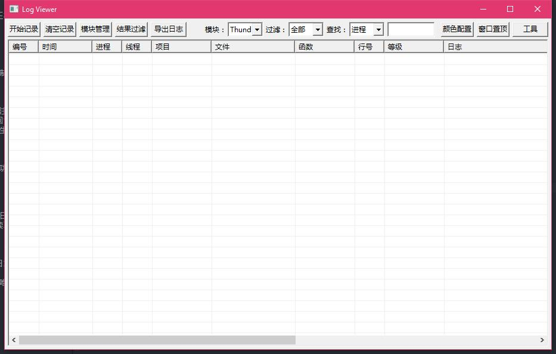
点击“模块管理”，会列出当前所有模块，以及一系列可执行的操作。
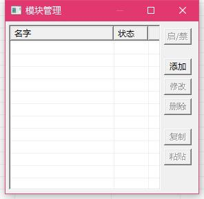
点击“添加”可添加新的模块。
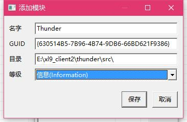
| 名字： | 模块的名字 |
| GUID： | 该模块的 GUID 字符串 |
| 目录： | 源代码所在的根目录，所有以此目录开始的源代码文件将只显示其相对路径 |
| 等级： | 控制日志输出等级，较低的等级会同时显示高等级的日志 |
添加完成后，点击“启用”可启用该模块，或“修改”，或“删除”。
在添加完模块，确定好哪些模块需要开启日志输出、及其日志输出等级后，点击主界面的“开始记录”即可开始日志记录功能。
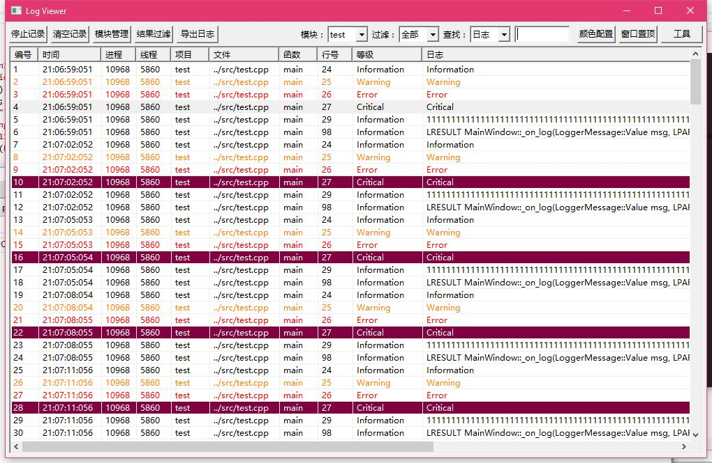
主界面顶部有可选择当前显示模块日志的功能。可随时自由切换。
在不需要关心某些列对应数据的时候，可以通过“右键”点击列表的表头来选择所需要的列，或通过拖放某一列来调整列的宽度及改变其顺序。
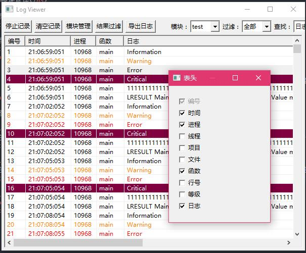
在主界面的“查找”栏确定待搜索的某一列（或全部），然后输入待搜索的文本，按 Enter 即可搜索。匹配的列将高亮指示。
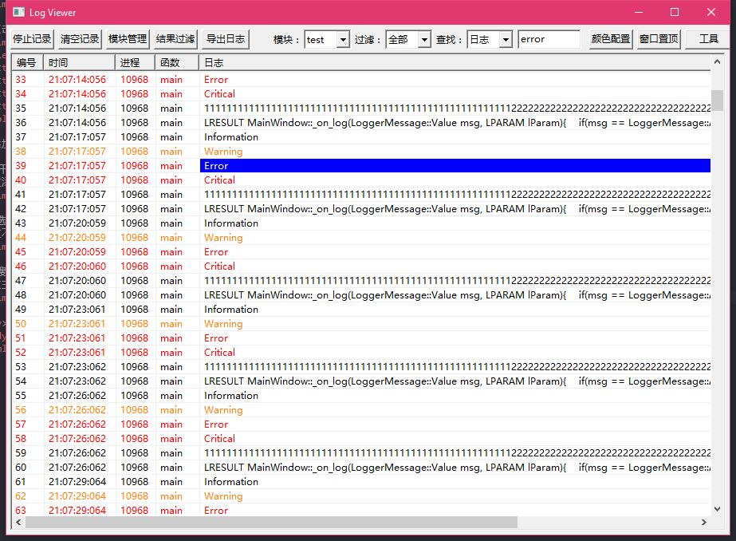
如果需要将当前搜索结果独立显示出来，可以按 “Ctrl + Enter”。
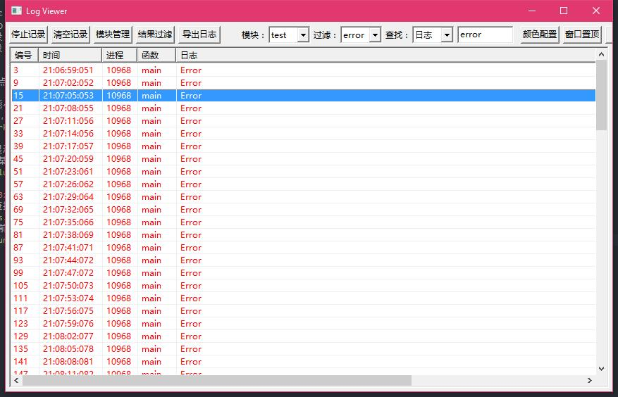
如果需要持续关注某一类型的数据，可以选择根据过滤条件添加一个过滤器。符合该规则的日志将添加到该规则对应的事件容器中。可随时自由切换当前所显示的过滤器。
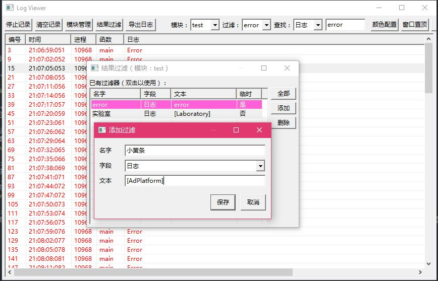
主界面上有日志导出按钮，选择后可以导出当前模块、当前过滤器的所有日志到指定的文件中，HTML 格式。
当前可设置不同日志等级的日志所在日志行的前景与背景色。
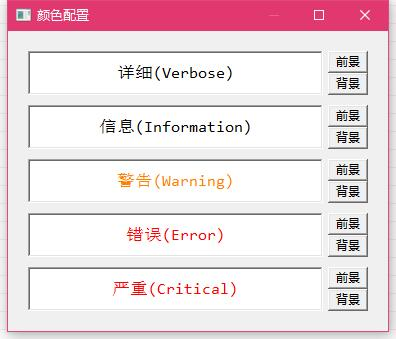
为了更方便统一地使用日志查看器，特地将 DebugView 的部分日志显示功能实现一份。几乎与原 DebugView 无异地使用。运行本程序时，会提示所使用的日志查看器类型：ETW or DebugView。
由于 JSON 目前在客户端使用得非常多，服务器返回的数据多是压缩空白字符的，不方便阅读。所以提供了一个 JSON 可视化工具。
先复制需要可视化显示的压缩过的 JSON 字符串到剪贴板，然后从“工具”菜单中打开“JSON 可视化”即可友好地显示 JSON 数据。
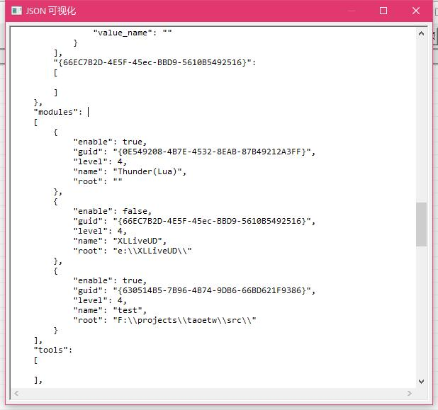
同样，为了方便一些小脚本测试，现提供了 LUA 脚本控制台，输入一段 LUA 代码，按下 F5 即可编译并运行执行结果。
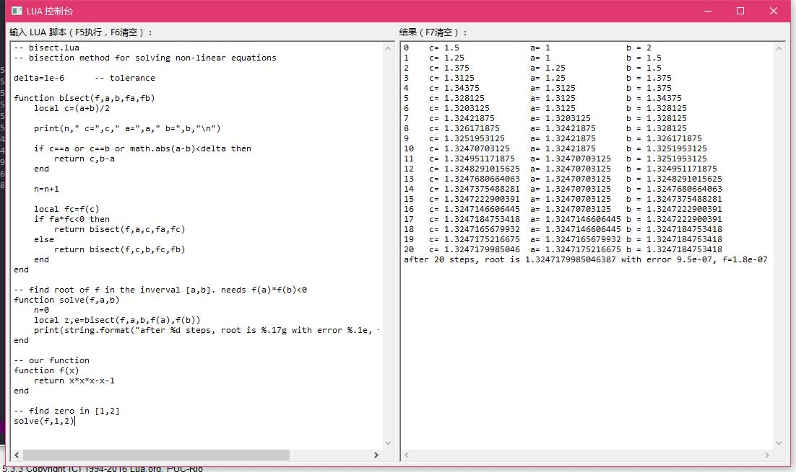
大概就是这些了，如果大家发现了什么 BUG，或者功能需要改进的地方，欢迎提出来，我尽力完善此小工具。
周末愉快。
Last modified: 2016-12-21 22:00:40